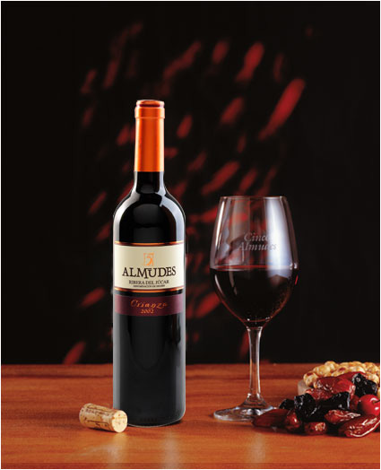

Bodegas Antonio
Elaboracion de vinos artesanales
ALMUDES
5 Almudes Tempranillo es un vino elaborado a partir de la selección del viñedo de más edad de Tempranillo de la Bodega. Es vino joven, fresco y agradable. +MORE
Leer Mas.TEBER

La primera es la habitual y se basa en que si la uva tiene cáscara roja, seguro esa varietal puede hacer un vino rosado. Con la sola inmersión de las cáscaras por una hora, el vino resultante será de color rosado. La segunda manera se basa en “sangrar” vino tinto de otra variedad al vino blanco. El vino es el mejor para empalagar su palagar con los jugos de frutas frescas mas ricas y estacionarias. +MORE
Leer Mas.FINCA ROJA

De color rojo con tonos ladrillo, que muestran su evolución. En nariz se presentan notas de frutas acomplejadas con su paso en barrica. Boca suave y voluminosa con un final largo y placentero. +MORE
Leer Mas.ALMUDES
5 Almudes Tempranillo es un vino elaborado a partir de la selección del viñedo de más edad de Tempranillo de la Bodega. Es vino joven, fresco y agradable. +MORE
Leer Mas.TEBER
La primera es la habitual y se basa en que si la uva tiene cáscara roja, seguro esa varietal puede hacer un vino rosado. Con la sola inmersión de las cáscaras por una hora, el vino resultante será de color rosado. La segunda manera se basa en “sangrar” vino tinto de otra variedad al vino blanco. El vino es el mejor para empalagar su palagar con los jugos de frutas frescas mas ricas y estacionarias. Generalmente un vino de esta calidad no se encuentra en cualquier parte del mundo. Su posecion es muy deseada. +MORE
Leer Mas.